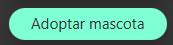
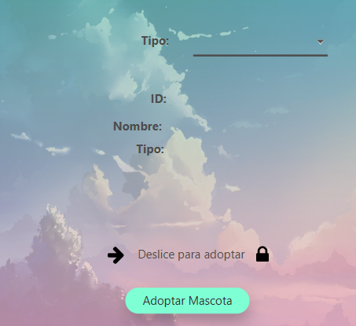

Para poder adoptar a un animal primero debes abrir el menú que se encuentra en la parte superior izquierda.
Una vez abierto, escoge la opción "Adoptar mascota".
Así, se mostrará la siguiente pestaña:
Ahora, debes elegir el tipo de mascota que quieres adoptar. Las opciones son:
Un avez elegido el animal que quiere adoptar, se le mostrará su información por pantalla.
Deslice la flecha hasta el candado para desbloquear el botón de adoptar y pulse en él.